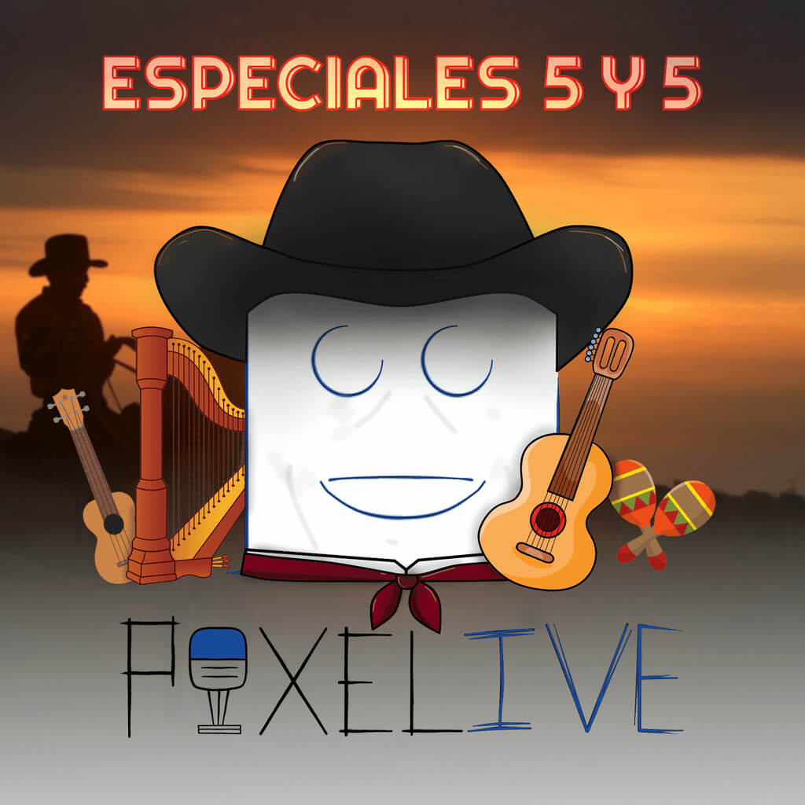
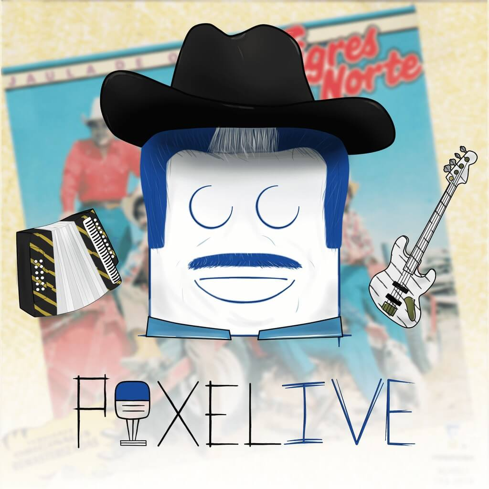

ESPECIAL JULIO
Programa_julio.mp3
Héctor Juan Pérez Martínez nació en Ponce en 1946, y desde muy pequeño la tragedia a su vida llegó: a los tres, con la muerte de Panchita —su madre— a causa de una tuberculosis y luego, a los diez, con la muerte de su padre, Luis. Así comienza la historia del tipo más incomprendido, malentendido y bandido que ha visto esta música que desde entonces, esperó que llegara su día de suerte aunque siempre su condena fuera padecer en vida las canciones que cantaba. Sin embargo, en su destino estaba sobrevivir a la muerte a través de su voz, esa misma que se grabó en las páginas de un periódico de ayer que hoy sigue siendo noticia. Muy joven y con apenas diecisiete, se aventuró a viajar a Nueva York con el sueño de ser cantante y conocer El Barrio donde se convirtió en un irreverente que sonaba al ritmo del bolerista Felipe Pirela. Era un aguacate de noventa libras que llegó para fajarse con los bravos
LECTURA UN CUENTO DE TODOS
Programa_lectura.mp3
Héctor Juan Pérez Martínez nació en Ponce en 1946, y desde muy pequeño la tragedia a su vida llegó: a los tres, con la muerte de Panchita —su madre— a causa de una tuberculosis y luego, a los diez, con la muerte de su padre, Luis. Así comienza la historia del tipo más incomprendido, malentendido y bandido que ha visto esta música que desde entonces, esperó que llegara su día de suerte aunque siempre su condena fuera padecer en vida las canciones que cantaba. Sin embargo, en su destino estaba sobrevivir a la muerte a través de su voz, esa misma que se grabó en las páginas de un periódico de ayer que hoy sigue siendo noticia. Muy joven y con apenas diecisiete, se aventuró a viajar a Nueva York con el sueño de ser cantante y conocer El Barrio donde se convirtió en un irreverente que sonaba al ritmo del bolerista Felipe Pirela. Era un aguacate de noventa libras que llegó para fajarse con los bravos
ESPECIAL HECTOR LAVOE
Emotional Prism.mp3
Héctor Juan Pérez Martínez nació en Ponce en 1946, y desde muy pequeño la tragedia a su vida llegó: a los tres, con la muerte de Panchita —su madre— a causa de una tuberculosis y luego, a los diez, con la muerte de su padre, Luis. Así comienza la historia del tipo más incomprendido, malentendido y bandido que ha visto esta música que desde entonces, esperó que llegara su día de suerte aunque siempre su condena fuera padecer en vida las canciones que cantaba. Sin embargo, en su destino estaba sobrevivir a la muerte a través de su voz, esa misma que se grabó en las páginas de un periódico de ayer que hoy sigue siendo noticia. Muy joven y con apenas diecisiete, se aventuró a viajar a Nueva York con el sueño de ser cantante y conocer El Barrio donde se convirtió en un irreverente que sonaba al ritmo del bolerista Felipe Pirela. Era un aguacate de noventa libras que llegó para fajarse con los bravos

ESPECIAL LLANERA
pista intro.mp3
Hoy vamos a hablar de la Música llanera, del Joropo Llanero, porque hablar de la estética de la música llanera es viajar en un comienzo por las raíces campesinas de un mundo sumergido en el amor por el ganado, por las sabanas que parecen no tener fin y de una admiración por los paisajes verdosos que difuminan con un cielo azul la lejanía. Antes de empezar con el programa a fondo, es necesario agradecer a la radio nacional de Colombia, también a Andrés Muñoz Jaramillo y a Llanoadentro.net por la información proporcionada, desde aquí gracias, hacen posible este programa. El folclor Llanero, uno de los más puros y auténticos que le quedan a Colombia, es un folclor básicamente mestizo, una destilación de rasgos tanto españoles (especialmente andaluces) como nativos de América que comenzaron a interactuar en el siglo XVI con los primeros encuentros entre misioneros e indígenas. Durante la Colonia la influencia ininterrumpida de Venezuela fue evidente en la aparición de elementos africanos como el ritmo distintivo sincopado del joropo y la celebración del «Tiempo de Negreras» en Arauca. La influencia venezolana en el siglo XX puede encontrarse en la creciente popularidad del liquilique y la canción joropo o pasaje. También se ha presentado el intercambio esporádico con el interior colombiano. Se puede afirmar que la música llanera es patrimonio de Colombia y Venezuela.
ESPECIAL BACHATA
programa.mp3
Hoy hablaremos del género musical llamado Bachata, hablaremos de los orígenes y su evolución. La bachata es un género musical bailable que nace en la República Dominicana a principio de los años 60. Influenciada por ritmos como el Bolero, el son cubano o tríos mexicanos y puertorriqueños, venía acompañada generalmente de letras nostálgicas que hablaban del amor y el desamor de sus protagonistas. Actualmente uno de los géneros latinos más populares en el mundo incluso por encima de la salsa o el merengue. La bachata está de moda. Pero en sus orígenes la bachata no fue muy apreciada por la sociedad, con el tiempo ha ido evolucionando y ganando un importante sitio en la actualidad del mundo del baile. Poco a poco, la bachata ha ido llegando a muchos países y contagiando a todos con sus sensuales ritmos, pasos de baile y sobre todo con sus románticas letras.
ESPECIAL NAVIDAD
Emotional Prism.mp3
Hoy, vamos hablar del grupo que pone a bailar cada año a todos los colombianos en sus festividades de fin de año, como lo son los grandes Los 50 de Joselito. En Diciembre de 1998 Colombia entera disfrutaba de un nuevo fenómeno musical, en donde los temas eran interpretados y cantados por un puñado de jóvenes que se habían remontado a los años 50 para revivir los grandes éxitos de aquella década. Se trataba de Los 50 de Joselito, totalmente desconocidos, pero brillantes en la interpretación y ejecución de los temas de antaño. Nadie, absolutamente nadie, supo de donde salieron y cómo aparecieron en las estaciones radiales de Bogotá, encabezadas por La Z de Todelar (92.9), con el tema “Dame tu Mujer José”. De la nada pasaron al primer lugar en los listados musicales especializados. El asombro fue total,… ¿Quiénes son Los 50 de Joselito?, se preguntaban propios y extraños, máxime que al llegar la noche del 20 de octubre de 1998 se habían vendido 50.000 copias en un solo día. ¡Insólito!
ESPECIAL EL JOE ARROYO
opening jujutsu kaisen.mp3
Álvaro José Arroyo González (Cartagena de Indias, 1 de noviembre de 1955 - Barranquilla, 26 de julio de 2011), más conocido como Joe Arroyo, fue un cantante y compositor colombiano de música salsa y tropical incluyendo la Cumbia, considerado uno de los más grandes intérpretes de música de su país.
Sus canciones fueron éxito a nivel nacional e internacional, ganó múltiples discos de oro a lo largo de su carrera; entre ellos, 18 congos de oro y 4 super congos en el festival de Orquestas del Carnaval de Barranquilla.Entre sus canciones más relevantes destacan: «La rebelión», «Tania», «Mary», «En Barranquilla me quedo», «El ausente», «Tumbatecho», «Centurión de la noche», «Manyoma», «La noche», «La rumbera», «La guarapera», «El trato», «Con gusto y ganas», entre otras.

ESPECIAL LOS TIGRES DEL NORTE
programa.mp3
La historia del grupo inicia en 1968, cuando un joven Jorge Hernández de 14 años decide invitar a sus hermanos y su primo para formar un nuevo grupo. Por ese entonces la situación económica de la familia era precaria por lo que todos debían contribuir. La agrupación de los tigres del norte, está conformada por: el director musical, primer vocalista y acordeón Jorge Olegario Hernández Angulo, junto con sus hermanos, Hernán Hernández Angulo en el bajo eléctrico y voz, Eduardo Hernández Angulo en acordeón, saxo, bajo sexto y voz, Luis Hernández Angulo en bajo sexto y voz; y su primo Oscar Angulo Lara en batería. Armados de talento iniciaron su aventura trabajando en restaurantes y eventos. Con el tiempo se mudan a Mexicali, Baja California, donde empiezan a ganar reconocimiento. Cierto día mientras se dirigían a una presentación en San José (California), con motivo de las celebraciones del 5 mayo, son interrogados por un oficial de seguridad, el cual curioso por el nombre de estos, termina bautizándolos como Los Tigres del Norte. En San José fueron escuchados por un inglés de nombre Arthur Walker, el cual desde entonces se dedicaría a apoyarlos. Este les permitió grabar su primeros sencillos y álbumes, tales como Juana La Traicionera / Por El Amor A Mis Hijo (1968), Si, Si, Si / Chayo Chaires (1970) y El Check (1972). Con el paso del tiempo el grupo comenzaría a ganar fama en San José, donde decidieron establecerse.
¡Upss! No se encontrarón resultados...